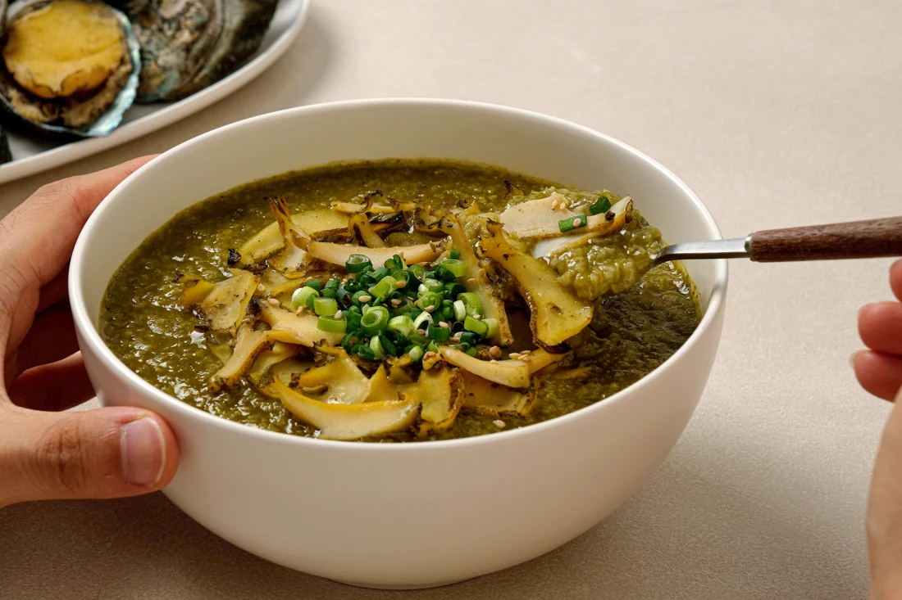
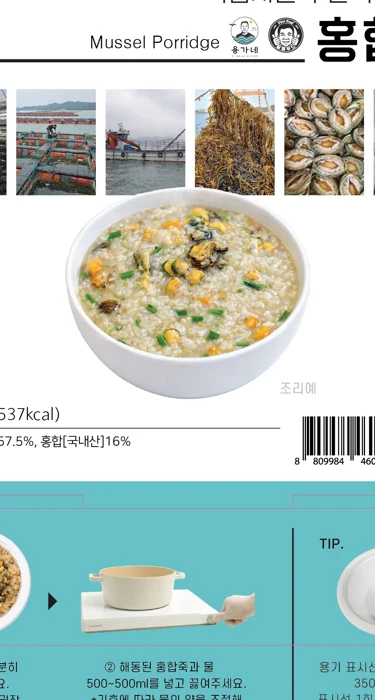
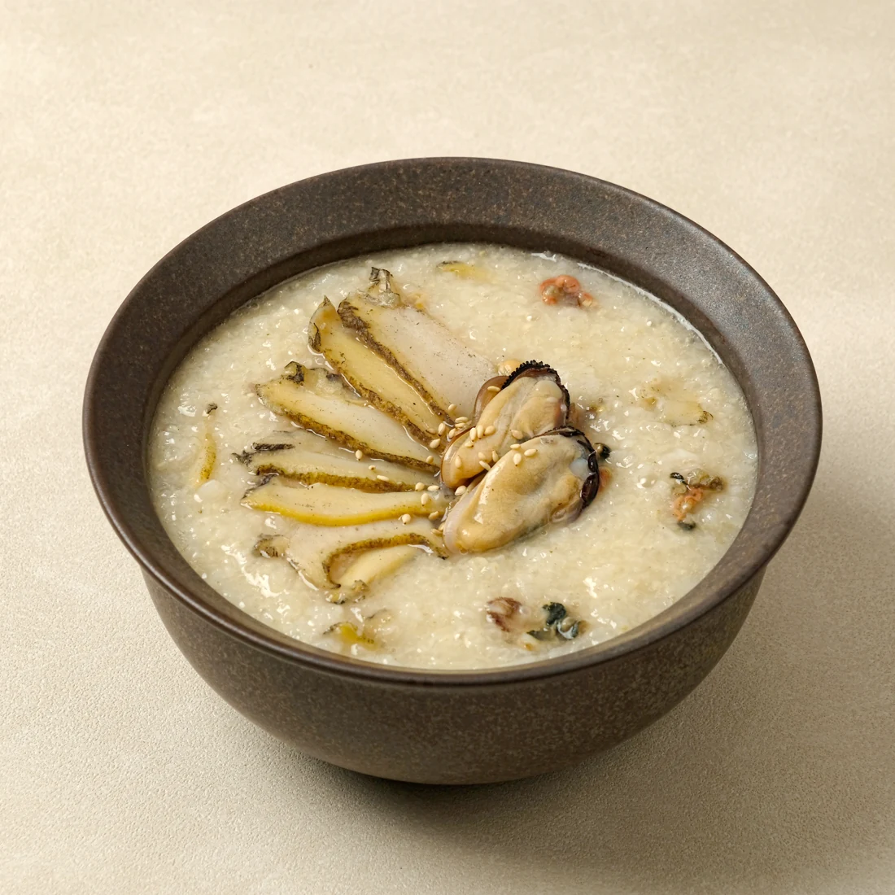
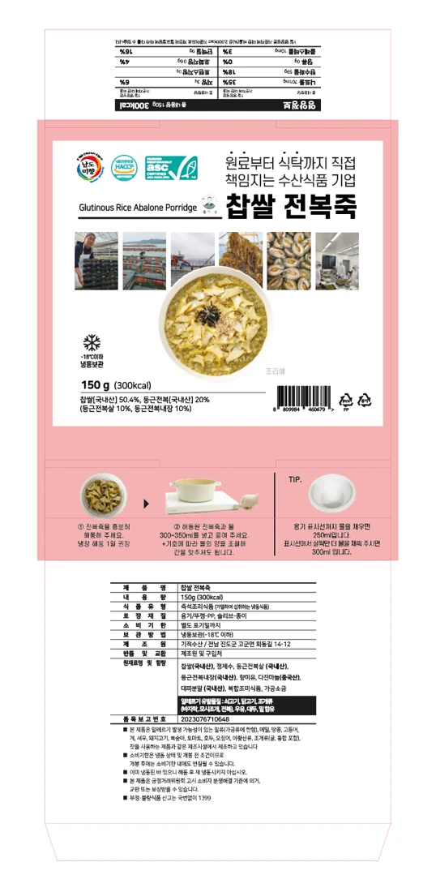
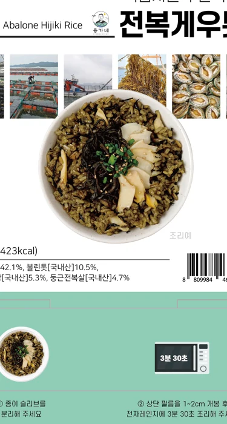
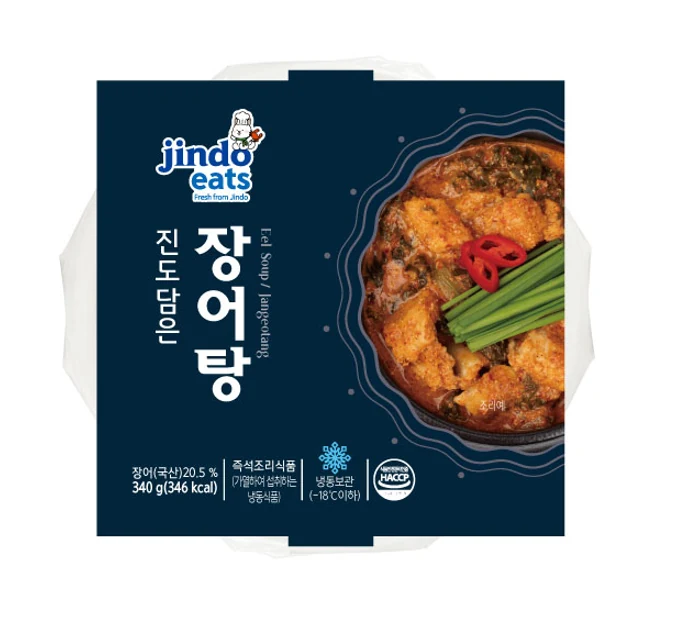

제품소개
가정에서 즐기는 한 끼부터 외식·급식용 식자재까지


전복을 넣어 한 끼로 즐기는 죽.


찹쌀과 전복을 담은 간편식.

전복과 미역을 함께 담은 국.

장어를 넣어 끓인 탕.
전복을 간장에 절인 반찬.
기업용 식자재
해동 후 조리에 사용할 수 있어 손질과 가열 공정을 줄이는 데 도움이 됩니다. 전복죽, 전복솥밥, 밀키트 원료로 활용할 수 있습니다.